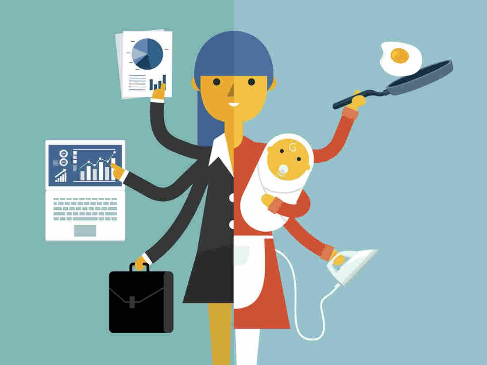
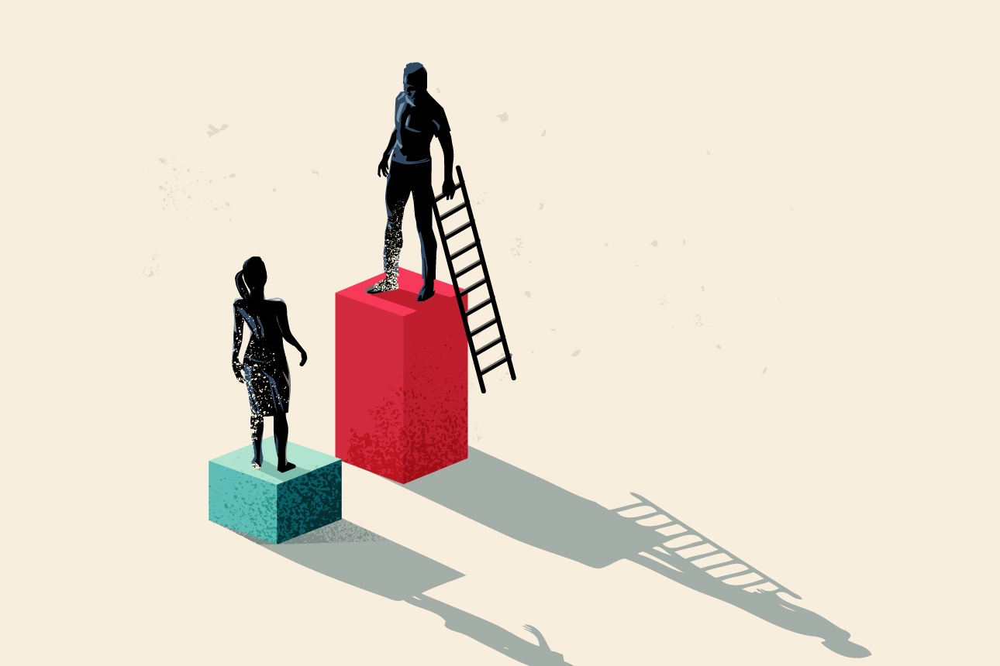
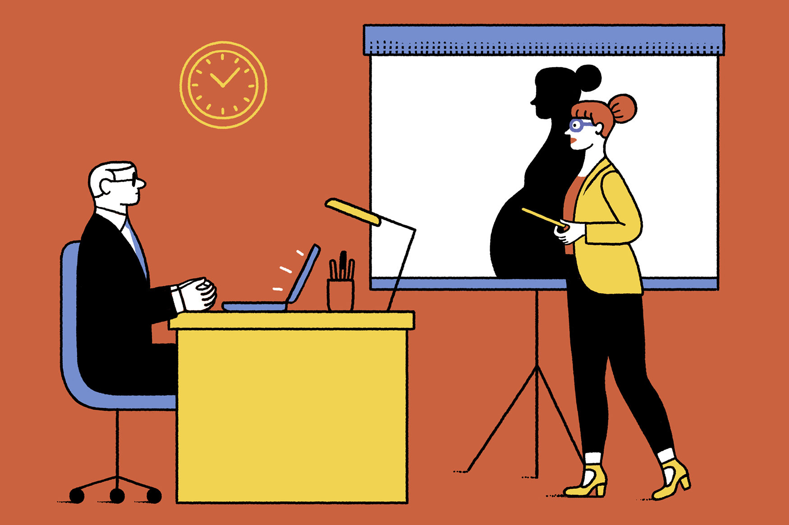

Causes
In General the causes of gender inequality differ between countries and are shaped by historical, cultural, and political factors that limit women's job prospects.
Stereotype
In the context of job opportunities, gender stereotypes can influence the hiring process, promotion decisions, and career advancement opportunities. For example, women may be perceived as less competent, less ambitious, or less committed to their careers than men, based on gender stereotypes. This can lead to women being overlooked for job opportunities, receiving lower salaries and fewer benefits, and having fewer opportunities for career advancement.
Unfairness

Women face unfairness in job opportunities, including limited access to certain industries, and wage disparities compared to their male counterparts. Although Palestinian women often get better education than men, their career prospects are worse than men's. As a result, young female graduates are particularly forced to accept jobs that do not match their qualifications.
Bias
Societal expectations and stereotypes often lead to biases against women in certain professions. This can result in limited job opportunities and discourage women from pursuing careers in fields traditionally dominated by men. According to a UN report that collected data from 75 countries, 90% of men and women hold some bias against women - with almost half of the respondents believing that men make stronger political leaders and business
Discrimination
Many women in Palestine suffer from discrimination in the workplace, represented by the opportunities they receive, the wages they receive, and the promotions available to them. Women also face other challenges such as sexual assault and harassment in the workplace, which negatively affect the level of equality at work.